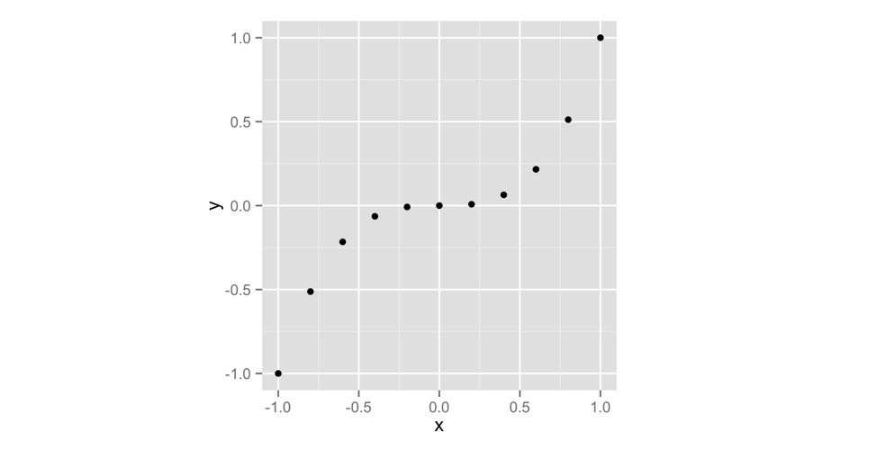
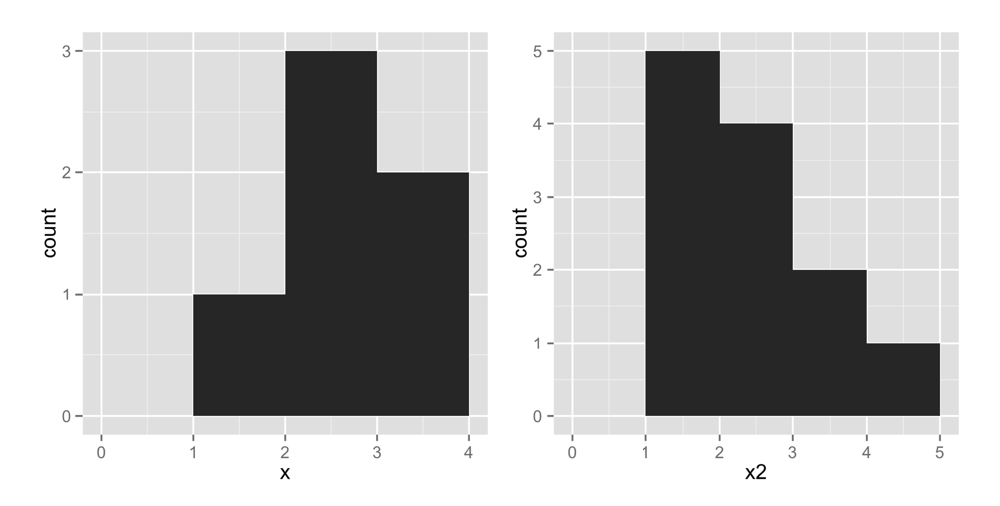
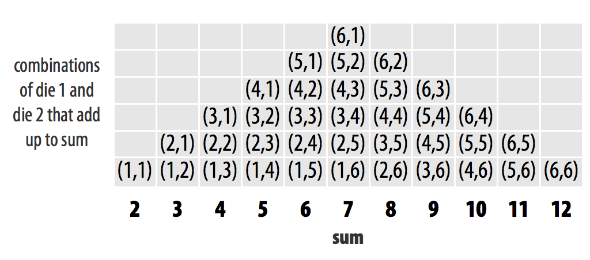
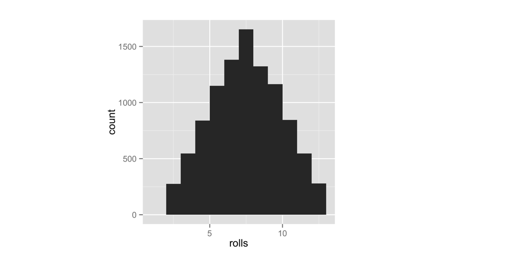
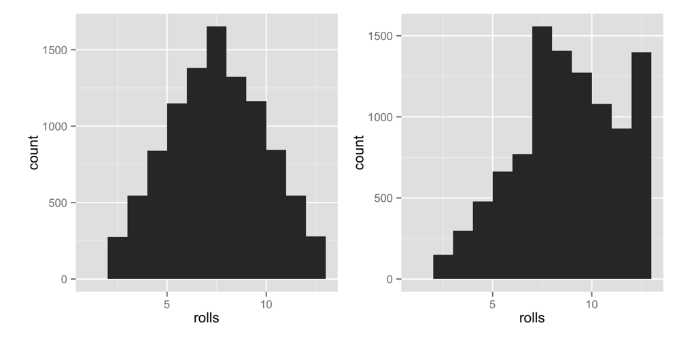

3 パッケージとヘルプページ
ペアのサイコロをシミュレートする関数ができました。ここで、少し状況を面白くするために、自分に有利なようにサイコロに重みを付けてみましょう。「胴元（カジノ）は常に勝つ」と言いますよね？低い数字よりも高い数字が少しだけ頻繁に出るように設定してみましょう。
サイコロに重みを付ける前に、まずそのサイコロが公正（フェア）であることを確認する必要があります。そのために役立つ2つのツールが「反復（Repetition）」と「可視化（Visualization）」です。偶然にも、これら2つのツールはデータサイエンスの世界における最も強力な武器でもあります。
サイコロのロールを繰り返すには replicate という関数を使用し、その結果を可視化するには qplot という関数を使用します。qplot はRをダウンロードしたときに最初から入っているわけではありません。qplot は独立したRパッケージに含まれています。Rの最も有用なツールの多くはRパッケージとして提供されているため、まずはRパッケージとは何か、そしてそれをどのように使うかを見てみましょう。
3.1 パッケージ
Rで独自の関数を書いているのはあなただけではありません。多くの教授、プログラマー、統計学者が、データの分析を支援するツールを設計するためにRを使用しています。そして、彼らはこれらのツールを誰でも無料で使えるように公開しています。これらのツールを使うには、ダウンロードするだけで済みます。これらは「パッケージ（Package）」と呼ばれる、あらかじめ組み立てられた関数とオブジェクトのコレクションとして提供されます。付録2：Rパッケージ にはパッケージのダウンロードと更新に関する詳細な手順がありますが、ここではその基本を見ていきましょう。
ここでは、簡単なグラフを作成するために qplot 関数を使用します。qplot は、グラフ作成のための人気パッケージである ggplot2 に含まれています。qplot や ggplot2 パッケージ内の他の機能を使う前に、まずパッケージをダウンロードしてインストールする必要があります。
3.1.1 install.packages
各Rパッケージは、R本体をホストしているのと同じウェブサイトである http://cran.r-project.org にホストされています。しかし、Rパッケージをダウンロードするためにわざわざそのサイトを訪れる必要はありません。Rのコマンドラインから直接ダウンロードできます。手順は以下の通りです：
- RStudioを開きます。
- インターネットに接続されていることを確認します。
- コマンドラインで
install.packages("ggplot2")を実行します。
これだけです。Rがウェブサイトにアクセスし、ggplot2をダウンロードし、ハードドライブ内のRが認識できる場所にインストールします。これで ggplot2 パッケージが手に入りました。他のパッケージをインストールしたい場合は、コード内の ggplot2 を目的のパッケージ名に置き換えてください。
3.1.2 library
パッケージをインストールしただけでは、その関数がすぐに使えるようになるわけではありません。単にハードドライブに保存されただけです。RのセッションでRパッケージを使用するには、次に library("ggplot2") というコマンドで読み込む必要があります。別のパッケージを読み込みたい場合は、ggplot2 をそのパッケージ名に置き換えてください。
これが何をするのか、実験して確かめてみましょう。まず、Rに qplot 関数を表示するよう求めてみます。Rは qplot を見つけることができません。なぜなら qplot はまだ読み込んでいない ggplot2 パッケージの中に存在するからです。
qplot
## Error: object 'qplot' not foundでは、ggplot2 パッケージを読み込みます。
library("ggplot2")指示通りに install.packages でインストールしていれば、問題なく動作するはずです。結果やメッセージが表示されなくても心配しないでください。パッケージの読み込みにおいて「便りがないのは良い便り」です。また、メッセージが表示されても心配しないでください。ggplot2 は時々、役立つ起動メッセージを表示します。「Error（エラー）」という文字が表示されない限り、順調です。
これで qplot の表示を求めると、Rはかなりの量のコードを表示します（qplot は長い関数です）。
qplot
## (かなりの量のコード)付録2：Rパッケージ には、パッケージの取得と使用に関するさらに詳細な情報があります。Rのパッケージシステムに慣れていない場合は、一読することをお勧めします。覚えておくべき最も重要な点は、パッケージのインストールは一度だけでよいが、新しいRセッションで使いたいときはその都度 library で読み込む必要があるということです。RStudioを閉じるたびに、Rはすべてのパッケージをアンロード（解除）します。
それでは、読み込んだ qplot を使ってみましょう。qplot は「クイック・プロット（Quick Plot）」を作成します。長さの等しい2つのベクトルを qplot に渡すと、散布図を描画してくれます。qplot は最初のベクトルをx値の集合として、2番目のベクトルをy値の集合として使用します。グラフはRStudioウィンドウの右下ペインにある「Plots」タブに表示されます。
次のコードは、Figure 3.1 に示すグラフを作成します。これまでは : 演算子で数値のシーケンスを作成してきましたが、c 関数を使って数値のベクトルを作成することもできます。ベクトルに入れたいすべての数値をカンマで区切って c に渡します。c は「concatenate（連結）」の略ですが、「collect（集める）」や「combine（組み合わせる）」と考えてもよいでしょう。
x <- c(-1, -0.8, -0.6, -0.4, -0.2, 0, 0.2, 0.4, 0.6, 0.8, 1)
x
## -1.0 -0.8 -0.6 -0.4 -0.2 0.0 0.2 0.4 0.6 0.8 1.0
y <- x^3
y
## -1.000 -0.512 -0.216 -0.064 -0.008 0.000 0.008
## 0.064 0.216 0.512 1.000
qplot(x, y)ベクトルを x や y と命名する必要はありません。例を分かりやすくするためにそうしただけです。Figure 3.1 でわかるように、散布図はx値とy値に従ってプロットされた点の集合です。ベクトル x と y を合わせると、11個の点の集合を表しています。Rはどのようにして x と y の値を対応させてこれらの点を作ったのでしょうか？それは、Figure 2.3 で見た「要素ごとの実行」によるものです。
散布図は2つの変数間の関係を可視化するのに便利です。しかし、ここでは別の種類のグラフである「ヒストグラム（Histogram）」を使用します。ヒストグラムは単一の変数の分布を可視化するもので、各xの値においていくつのデータポイントが存在するかを表示します。
理解を深めるためにヒストグラムを見てみましょう。qplot にプロット用のベクトルを1つだけ与えると、ヒストグラムが作成されます。次のコードは Figure 3.2 の左側のグラフを作成します（右側のグラフについてはすぐに説明します）。グラフを同じ見た目にするために、追加の引数 binwidth = 1 を使用してください。
x <- c(1, 2, 2, 2, 3, 3)
qplot(x, binwidth = 1)
このグラフは、区間 [1, 2) に1つの値が含まれていることを、その区間の上に高さ1の棒を置くことで示しています。同様に、区間 [2, 3) に3つの値があることを高さ3の棒で、区間 [3, 4) に2つの値があることを高さ2の棒で示しています。これらの区間において、角括弧 [ はその数値が区間に含まれることを意味し、丸括弧 ) はその数値が含まれないことを意味します。
別のヒストグラムを試してみましょう。次のコードは Figure 3.2 の右側のグラフを作成します。x2 の中に値が1であるポイントが5つあることに注目してください。ヒストグラムは、区間 x2 = [1, 2) の上に高さ5の棒をプロットすることでこれを表示しています。
x2 <- c(1, 1, 1, 1, 1, 2, 2, 2, 2, 3, 3, 4)
qplot(x2, binwidth = 1)練習問題：ヒストグラムの可視化
x3を以下のベクトルとします。
x3 <- c(0, 1, 1, 2, 2, 2, 3, 3, 4)
x3のヒストグラムがどのようになるか想像してみてください。ヒストグラムのビン幅（bin width）を1と仮定します。棒はいくつできるでしょうか？それらはどこに現れるでしょうか？それぞれの高さはどれくらいになるでしょうか？想像できたら、
binwidth = 1を指定してx3のヒストグラムをプロットし、正解かどうか確認してください。
解答例
qplot(x3, binwidth = 1)でx3のヒストグラムを作成できます。ヒストグラムは対称なピラミッドのような形になります。中央の棒は高さ3になり、[2, 3)の上に表示されます。ぜひ自分で試して確認してください。
ヒストグラムを使えば、x の異なる値がどれくらい一般的（あるいは珍しいか）を視覚的に表示できます。高い棒で覆われている数値は、低い棒で覆われている数値よりも一般的であることを意味します。
サイコロの正確さを確認するために、ヒストグラムをどのように利用できるでしょうか？
サイコロを何度も振って結果を記録し続けると、特定の数値が他の数値よりも多く発生することが予想されます。これは、2つのサイコロを足して特定の合計を作る組み合わせの数が、数値によって異なるためです（Figure 3.3 参照）。
サイコロを何度も振ってその結果を qplot でプロットすれば、ヒストグラムは各合計がどれくらいの頻度で現れたかを示してくれます。最も頻繁に発生した合計は最も高い棒になります。サイコロが公正であれば、ヒストグラムは Figure 3.3 に示すパターンに似るはずです。
ここで replicate の出番です。replicate は、Rのコマンドを何度も繰り返す簡単な方法を提供します。使い方は、まず replicate に繰り返したい回数を与え、次に繰り返したいコマンドを与えます。replicate はコマンドを複数回実行し、結果をベクトルとして保存します。
replicate(3, 1 + 1)
## 2 2 2
replicate(10, roll())
## 3 7 5 3 6 2 3 8 11 7
最初の10回のロールのヒストグラムは、おそらく Figure 3.3 に示したパターンには見えないでしょう。なぜでしょうか？そこにはランダム性が強く働いているからです。現実世界でサイコロを使うのは、それらが優れた乱数生成器だからであることを思い出してください。長期的な頻度のパターンは、長期的に見たときにのみ現れます。そこで、10,000回のサイコロロールをシミュレートして結果をプロットしてみましょう。心配いりません。qplot と replicate なら余裕で処理できます。結果は Figure 3.4 のようになります。
rolls <- replicate(10000, roll())
qplot(rolls, binwidth = 1)この結果は、サイコロが公正であることを示唆しています。長期的には、各数値はそれを生成する組み合わせの数に比例して発生しています。
さて、どうすればこの結果に偏り（バイアス）を持たせることができるでしょうか？先ほどのパターンが発生するのは、個々のサイコロの基礎となる組み合わせ（例：(3, 4)）がすべて同じ頻度で発生するからです。もし、どちらかのサイコロで6が出る確率を高めることができれば、6を含む組み合わせは、6を含まない組み合わせよりも頻繁に発生するようになります。組み合わせ (6, 6) が最も多く発生することになります。これにより、合計が12になる確率が7になる確率を上回ることはありませんが、結果を高い数値の方へ歪ませることができます。

言い換えれば、公正なサイコロで特定の数字が出る確率は1/6です。これを、6未満の各数字が出る確率を1/8に変更し、6が出る確率を3/8に増やしてほしいのです。
| 数値 | 公正な確率 | 重み付けされた確率 |
|---|---|---|
| 1 | 1/6 | 1/8 |
| 2 | 1/6 | 1/8 |
| 3 | 1/6 | 1/8 |
| 4 | 1/6 | 1/8 |
| 5 | 1/6 | 1/8 |
| 6 | 1/6 | 3/8 |
sample 関数に新しい引数を追加することで、確率を変更できます。その引数が何であるかは教えません。代わりに、sample 関数のヘルプページを案内します。Rの関数にはヘルプページがあるのかって？もちろんです。その読み方を学びましょう。
3.2 ヘルプページを活用する
Rのコアには1,000以上の関数があり、新しいR関数も常に作成されています。これらすべてを暗記して学習するのは大変な量です！幸いなことに、各R関数には専用のヘルプページがあり、関数名の前に疑問符 ? を付けて入力することでアクセスできます。例えば、以下の各コマンドはヘルプページを開きます。ページはRStudioの右下ペインにある「Help」タブに表示されます。
?sqrt
?log10
?sampleヘルプページには、各関数が何をするのかについての有用な情報が含まれています。これらのヘルプページはコードのドキュメントとしても機能するため、読むのは少し苦労するかもしれません。多くの場合、その関数をすでに理解していて助けを必要としない人向けに書かれているように見えるからです。
これに困惑しないでください。ヘルプページから多くのことを得るには、意味のわかる情報をスキャンし、残りはざっと読み飛ばすのがコツです。このテクニックを使えば、必然的に各ヘルプページの最も役立つ部分、つまり「一番下」にたどり着くでしょう。そこには、ほぼすべてのヘルプページで、その関数を実際に動かしてみるサンプルコード（Examples）が含まれています。このコードを実行することは、例を通して学ぶための素晴らしい方法です。
Warning
関数がRパッケージに含まれている場合、そのパッケージを読み込んでいない限り、Rはそのヘルプページを見つけることができません。
3.2.1 ヘルプページの構成
各ヘルプページはいくつかのセクションに分かれています。セクションの内容はページによって異なりますが、通常は以下のような役立つトピックが含まれています。
Description（説明） - 関数が何をするのかについての短い要約。
Usage（用法） - 関数の入力方法の例。関数の各引数が、Rが期待する順番で表示されます（引数名を使わない場合）。
Arguments（引数） - 関数が取る各引数のリスト、Rが期待する情報の種類、および関数がその情報をどのように扱うか。
Details（詳細） - 関数の詳細な説明と動作の仕組み。このセクションでは、著者が関数を使う際に知っておくべき注意点を伝えることもあります。
Value（戻り値） - 関数を実行したときに返される内容の説明。
See Also（関連項目） - 関連するR関数の短いリスト。
Examples（例） - 実際に関数を使用する例で、動作が保証されているコード。ヘルプページの例のセクションは通常、関数のいくつかの異なる使用方法を示しています。これにより、関数で何ができるかのアイデアが得られます。
関数のヘルプページを探したいが関数名を忘れてしまった場合は、キーワードで検索できます。これを行うには、Rのコマンドラインで疑問符を2つ ?? 書き、その後にキーワードを入力します。Rはキーワードに関連するヘルプページへのリンクのリストを表示します。これは「ヘルプページのためのヘルプページ」と考えることができます。
??logsample のヘルプページを見てみましょう。目的は、サンプリングプロセスに含まれる確率を変更するのに役立ちそうな何かを探すことです。ここではヘルプページ全体を再現はしませんが（おいしい部分だけ抜き出します）、自分のコンピュータで一緒に確認してください。
まず、ヘルプページを開きます。RStudioでプロットが表示されたのと同じペイン（ただしHelpタブ）に表示されます。
?sample何が見えますか？一番上から見ていきましょう。
Random Samples and Permutations
Description
sample takes a sample of the specified size from the elements of x using
either with or without replacement.ここまでは順調です。これはすでに知っている内容です。次のセクション「Usage」に、手がかりとなりそうなものがあります。prob という名前の引数が言及されています。
Usage
sample(x, size, replace = FALSE, prob = NULL)「Arguments」セクションまでスクロールすると、prob の説明は非常に有望に聞こえます。
A vector of probability weights for obtaining the elements of the vector being
sampled.
（サンプリングされるベクトルの要素を取得するための、確率の重みのベクトル。）「Details」セクションが私たちの疑いを確信に変えてくれます。この場合、どのように進めればよいかも教えてくれています。
The optional prob argument can be used to give a vector of weights for obtaining
the elements of the vector being sampled. They need not sum to one, but they
should be nonnegative and not all zero.
（オプションの prob 引数を使用して、サンプリングされるベクトルの要素を取得するための重みのベクトルを指定できます。それらの合計が1である必要はありませんが、非負であり、かつすべてがゼロであってはなりません。）このヘルプページには書かれていませんが、これらの重みは、サンプリングされる要素と「要素ごと」に対応付けられます。最初の重みは最初の要素、2番目の重みは2番目の要素、という具合です。これはRにおける一般的な慣習です。
さらに読み進めると：
If replace is true, Walker's alias method (Ripley, 1987) is used...さて、この辺りでざっと読み飛ばし始めてよいでしょう。サイコロに重みを付ける方法を理解するのに十分な情報が得られました。
練習問題：ペアのサイコロを振る
以下の
roll関数を書き換えて、重み付けされたペアのサイコロを振るようにしてください。
roll <- function() {
die <- 1:6
dice <- sample(die, size = 2, replace = TRUE)
sum(dice)
}
roll内部のsample関数にprob引数を追加する必要があります。この引数は、1から5までの数字を確率1/8で、6の数字を確率3/8でサンプリングするようにsampleに伝える必要があります。完了したら、続きの解答例を読んでください。
解答例 サイコロに重みを付けるには、次のように
sampleに重みのベクトルを持つprob引数を追加します。
roll <- function() {
die <- 1:6
dice <- sample(die, size = 2, replace = TRUE,
prob = c(1/8, 1/8, 1/8, 1/8, 1/8, 3/8))
sum(dice)
}これにより、roll は1から5を確率1/8で、6を確率3/8で選択するようになります。
以前のバージョンの roll を新しい関数で上書きします（コマンドラインで上記のコードスニペットを実行してください）。次に、新しいサイコロの長期的な挙動を可視化します。Figure 3.5 に、元の結果と並べて表示しています。
rolls <- replicate(10000, roll())
qplot(rolls, binwidth = 1)これにより、サイコロに効果的に重み付けができたことが確認できました。低い数字よりも高い数字がはるかに頻繁に発生しています。驚くべきことは、この挙動は長期的な頻度を調べたときにのみ明らかになるということです。単一のロールでは、サイコロはランダムに振る舞っているように見えます。これは「カタンの開拓者たち」をプレイしているときには朗報かもしれませんが（友達にはサイコロを失くしたと言いましょう）、データを分析する立場からすると不気味です。なぜなら、短期的には誰も気づかないうちに、偏り（バイアス）が簡単に発生し得ることを意味しているからです。

3.2.2 さらなる助けを得るには
Rには、R-help メーリングリスト で助けを求めることができる非常に活発なユーザーコミュニティもあります。リストに質問をメールで送ることができますが、あなたの質問がすでに回答されている可能性が高いです。アーカイブ を検索して確認してください。
R-help リストよりもさらに優れたものは Stack Overflow です。これはプログラマーが質問に答え、ユーザーが役立つ回答をランク付けできるウェブサイトです。個人的には、Stack Overflow の形式の方が R-help メーリングリストよりもユーザーフレンドリー（そして回答者も人間として親しみやすい）だと感じています。自分で質問を投稿することも、Rに関連するすでに回答された30,000以上の質問を検索することもできます。
最も素晴らしいのは community.rstudio.com です。ここはRに関連する質問を共有するためのフレンドリーで包括的な場所です。community.rstudio.com はRに特化した非常に活発なフォーラムです。Rパッケージについて質問すると、そのパッケージの作者が現れて答えてくれても驚かないでください。
R-help リスト、Stack Overflow、および community.rstudio.com のいずれにおいても、質問と一緒に「再現可能な例（Reproducible example）」を提供すれば、より有用な回答が得られる可能性が高まります。これは、ユーザーが実行してあなたが直面しているバグや疑問を確認できる、短いコードスニペットを貼り付けることを意味します。
3.3 まとめ
Rのパッケージとヘルプページは、あなたをより生産的なプログラマーにしてくれます。 Chapter 2 で見たように、Rは特定のことを行うための独自の関数を書く力を与えてくれますが、多くの場合、あなたが書きたい関数はすでにRパッケージの中に存在しています。教授、プログラマー、科学者たちがあなたのために13,000以上のパッケージを開発しており、それらを使うことで貴重なプログラミング時間を節約できます。パッケージを使用するには、install.packages で一度コンピュータにインストールし、新しいRセッションごとに library で読み込む必要があります。
Rのヘルプページは、Rやそのパッケージに含まれる関数を使いこなす助けになります。Rのすべての関数とデータセットには独自のヘルプページがあります。ヘルプページには高度な内容が含まれていることが多いですが、関数の使い方を学ぶための貴重なヒントや例も含まれています。
これで、習うより慣れろの精神でRを学ぶのに十分な知識が身に付きました。これがRを学ぶ最良の方法です。独自のRコマンドを作成し、実行し、私が説明していないことを理解する必要があるときには助けを求めることができます。次の2つのプロジェクトを読み進めながら、Rで自分のアイデアを実験してみることをお勧めします。
3.4 プロジェクト1のまとめ
このプロジェクトであなたが行ったことは、単に不正行為やギャンブルを可能にしただけではありません。コンピュータに対してRという言語で話しかける方法を学びました。Rは英語、スペイン語、ドイツ語のような言語ですが、人間ではなくコンピュータと対話するためのものです。
R言語の名詞である「オブジェクト（Object）」に出会いました。そして、関数が動詞であることも（引数は副詞のようなものだと言えるでしょう）推測できたはずです。関数とオブジェクトを組み合わせることで、完全な思考を表現できます。思考を論理的な順序でつなぎ合わせることで、雄弁で、時には芸術的なステートメントを構築できます。その意味で、Rは他の言語とそれほど違いはありません。
Rは人間の言語ともう一つの特徴を共有しています。Rコマンドの語彙を増やさない限り、Rを話すことが快適に感じられることはありません。幸い、恥ずかしがる必要はありません。あなたがRを話すのを「聞く」のはコンピュータだけです。コンピュータはあまり寛容ではありませんが、決してあなたを裁くことはしません。心配はいりません。この本の終わりまでに、あなたのRの語彙は飛躍的に広がるでしょう。
Rが使えるようになった今、データサイエンスを行うためにRを使うエキスパートになる時が来ました。データサイエンスの基礎は、大量のデータを保存し、必要に応じてその値を呼び出す能力です。そこから、データの操作、可視化、モデリングなど、すべてが始まります。しかし、データセットを暗記して頭の中に保存することは容易ではありません。また、紙に書いて保存するのも効率的ではありません。大量のデータを保存する唯一の効率的な方法はコンピュータを使うことです。実際、過去30年間のコンピュータの発展は、蓄積できるデータの種類や分析手法を完全に変えました。一言で言えば、コンピュータによるデータ保存が、私たちが「データサイエンス」と呼ぶ科学の革命を推し進めたのです。
「[プロジェクト2：トランプ]」では、Rを使ってデータセットをコンピュータのメモリに保存する方法と、保存したデータを取得・操作する方法を学ぶことで、あなたをこの革命の一部へと導きます。